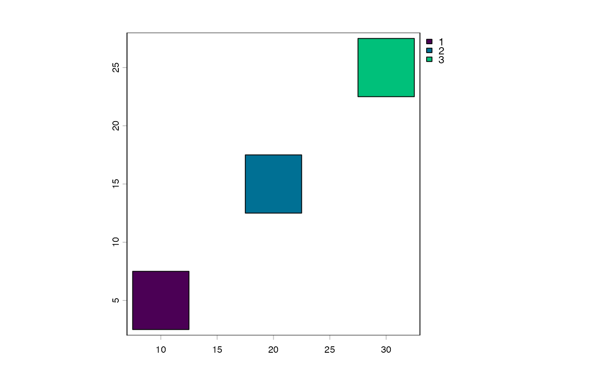

Tile plan where each tile is centered on a user-supplied (x, y) coordinate with a uniform tile size. The center coordinates are primary — for use cases like survey sampling, object detection patches, or site-centered extractions where the point location is semantically meaningful.
Utility class for tiling centered on arbitrary (x, y) coordinates with a uniform tile size. Unlike grid-based tile plans, tile placement is driven entirely by the supplied point locations.
All coordinates, tile dims, and padding live in one consistent reference
frame set by $input ("spatial" for CRS units, "pixel" for pixel
indices). The bound type returned by getTile() is a separate concern
controlled by $output and resolved at extraction time.
pointTilePlan(input = c("spatial", "pixel"), output = input, ...)character. Coordinate space of coords, dims, and padding:
"spatial" for CRS units, "pixel" for pixel indices.
character. Bound type returned by getTile(). Defaults to
input. Cross-mode conversion requires a SpatRaster at getTile() time
(or @rast_dims/@extent set on the plan for standalone use).
coordsmatrix. n x 2 matrix of tile center coordinates (columns: x, y).
inputcharacter. Coordinate space of coords, dims, and padding:
"spatial" for CRS units, "pixel" for pixel indices.
outputcharacter. Bound type returned by getTile(): "spatial" or
"pixel". Defaults to input. Evaluated at getTile() time, not [i].
rast_dimsnumeric. c(nrow, ncol) of the reference raster. Required
for plot() when input = "pixel" and for cross-mode conversion without a
raster.
extentnumeric. c(xmin, xmax, ymin, ymax) of the reference raster.
Required for pixel → CRS conversion without a raster.
nnumeric. Number of tiles (equals number of input points).
dimsinteger. Always c(n, 1L).
tile_dimsnumeric. Uniform c(height, width) in input coordinate units.
padnumeric. Tile padding in input coordinate units.
metadatadata.frame. Per-tile metadata; always has "tile", "x",
and "y" columns.
pointTilePlan() creates an instance. input defaults to "spatial";
output defaults to input.
$coords<- sets the n x 2 center coordinate matrix (columns: x, y).
$width<- / $height<- set the uniform tile width and height in input
coordinate units.
$input<- / $output<- change the coordinate / output mode.
$nrows<- / $ncols<- are aliases for $height<- / $width<- for
consistency with pixelTilePlan when using pixel coordinates.
$rast_dims<- sets c(nrow, ncol) of the reference raster — required
for plot() when input = "pixel" and for cross-mode getTile() calls
when no raster is provided.
$extent<- sets c(xmin, xmax, ymin, ymax) — required for
pixel → CRS conversion without a raster.
| Scenario | @rast_dims | @extent |
input = "spatial", output = "spatial" | not needed | not needed |
input = "pixel", output = "pixel" | for plot() | not needed |
input = "pixel", output = "spatial" | required | required |
input = "spatial", output = "pixel" | required | derived |
When getTile() is called with a SpatRaster, the raster's own metadata
is used for conversion — @rast_dims and @extent are only needed for
standalone operations (plotting, validation) without a raster.
[i] returns bounds in the input coordinate space: SpatExtent when
input = "spatial", integer[4] when input = "pixel". $output is not
consulted at [i] time. Use getTile() for output-mode conversion.
When input = "pixel", tile dims should be odd for an unambiguous center
pixel. With even dimensions center ± width/2 produces non-integer bounds
that are truncated by as.integer().
After setting coords, metadata is auto-populated with "tile", "x", and
"y" columns. Additional columns can be added via $<-.
tp <- pointTilePlan("spatial")
tp$coords <- cbind(x = c(10, 20, 30), y = c(5, 15, 25))
tp$width <- 5
tp$height <- 5
tp
#> Object of class pointTilePlan
#> input : spatial
#> output : spatial
#> n : 3
#> tile_dims : 5, 5 (height, width)
#> pad : 0
length(tp)
#> [1] 3
tp[1]
#> [[1]]
#> SpatExtent : 7.5, 12.5, 2.5, 7.5 (xmin, xmax, ymin, ymax)
#>
tp[2:3]
#> [[1]]
#> SpatExtent : 17.5, 22.5, 12.5, 17.5 (xmin, xmax, ymin, ymax)
#>
#> [[2]]
#> SpatExtent : 27.5, 32.5, 22.5, 27.5 (xmin, xmax, ymin, ymax)
#>
centroids(tp)
#> class : SpatVector
#> geometry : points
#> dimensions : 3, 0 (geometries, attributes)
#> extent : 10, 30, 5, 25 (xmin, xmax, ymin, ymax)
#> coord. ref. :
plot(tp)

# CRS input, pixel output (raster needed at getTile time)
tp2 <- pointTilePlan(input = "spatial", output = "pixel")
tp2$coords <- cbind(x = c(10, 20), y = c(5, 15))
tp2$width <- 100
tp2$height <- 100